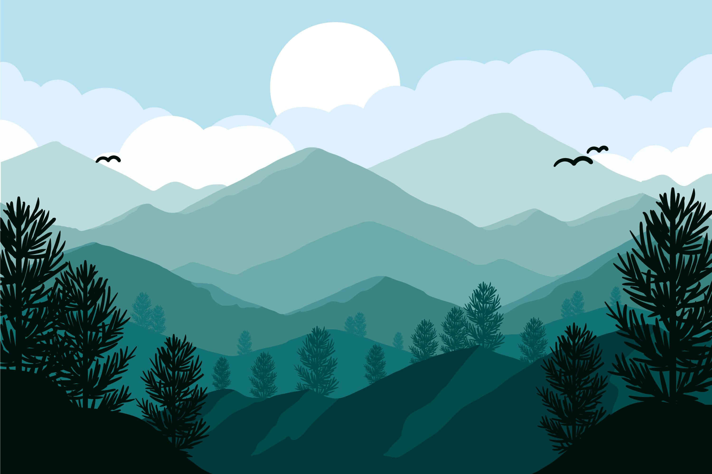
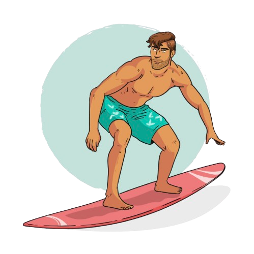
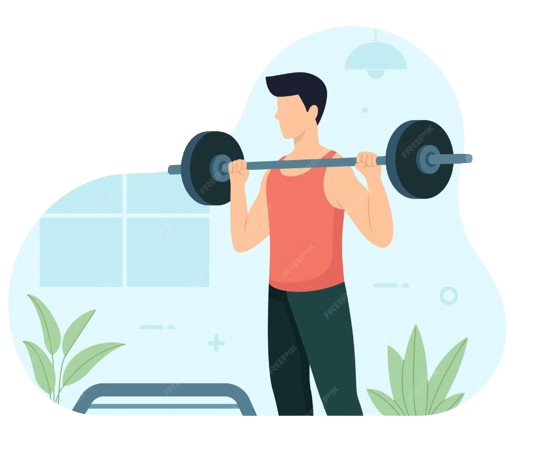
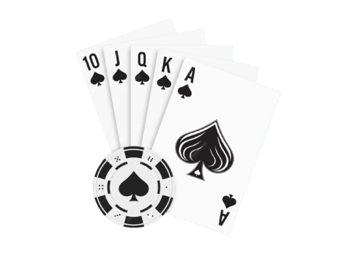
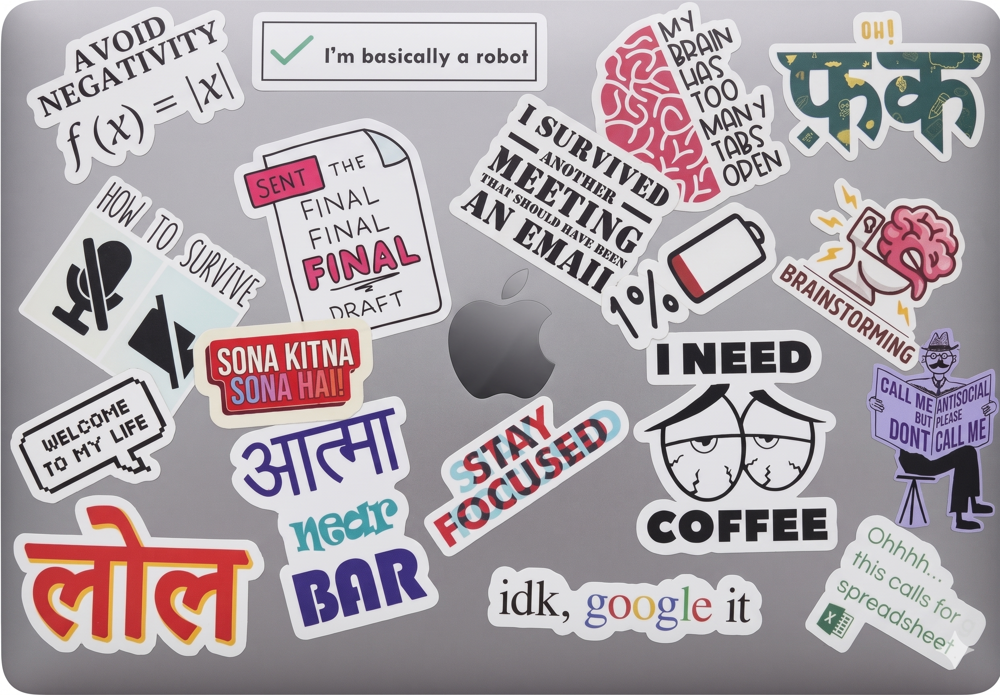
Hi, I'm Ankit!
and I love building fun things with passionate people!
MBA Candidate @ IIM Lucknow · Ex-AU Bank · Ex-Axis Bank
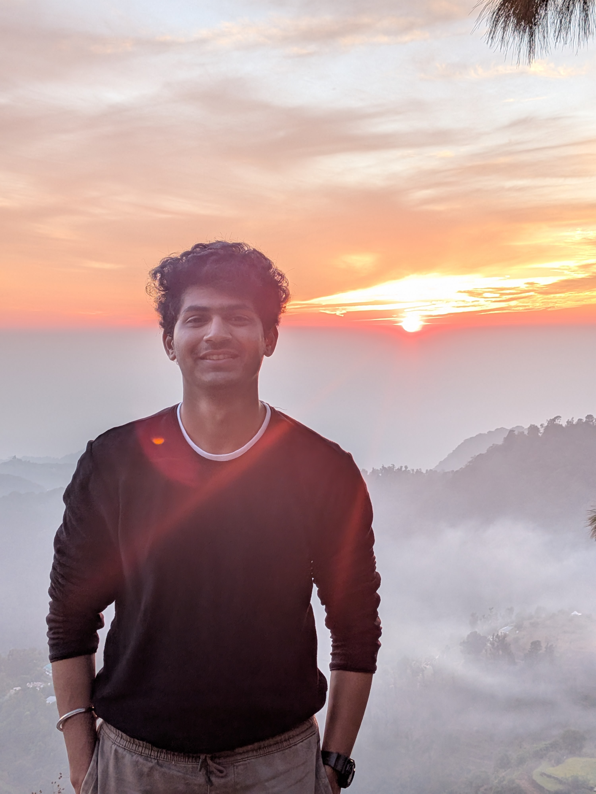
Case Studies
Deep dives into the problems I've owned - strategy, discovery, execution, and results.
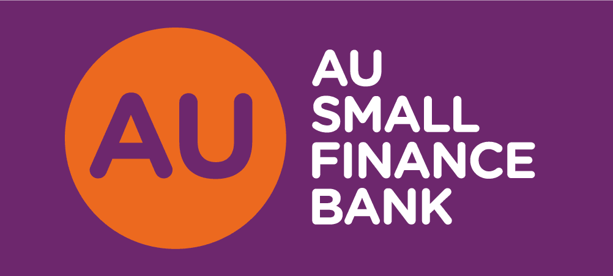
AU ACE: AU Bank's 100% Paperless Onboarding
Imagine handing a customer a pen and paper form in 2024 while your competitor's app opens an account in 10 minutes.
- Complete overhaul of 5 onboarding journeys: Individual, Sole Props, Partnerships, LLPs and Companies
- Adopted by a 3500+ pan-India sales team & 1.25 Lakh accounts opened annually
CIBIL-like Score for Current Account Users
What if your bank could tell a fraudster "not today" - before they even opened an account?
- Preemptive risk categorization model live within 3 months of ideation
- Real-time fraud flagging embedded seamlessly into the AU Ace onboarding flow
Last Mile: Biometric-First Banking
What if opening a bank account didn't need a branch, paperwork, or even good internet?
- 10,000+ users onboarded in rural / low-network areas in the first quarter, post launch
- Created a setup that could be scaled across similar segments
My Product Philosophy
Three lenses I bring to every problem - shaped by 45 months of shipping in regulated markets.
Compliance is the ultimate design challenge. I build "Golden Paths" that satisfy the auditor while delighting the customer. RBI guidelines aren't blockers - they're the constraint that forces elegant, trustworthy product decisions.
In banking, ignoring an edge case leads to NPAs or fines. By designing for the most complex entity first - say, a partnership firm - the simple retail journey becomes naturally robust. Robustness isn't overhead; it's the foundation.
I use data to understand what's happening, but the real focus is figuring out why users behave the way they do. Most problems usually look like metrics on a dashboard first - until you dig deeper and realize there's a real user frustration behind them.
From Circuits to Products
Education and work, side by side - the way they always happened.
- Visualized subjective OKRs and KPIs for structured tracking of Volvo's 2030 strategy
- Assisted in implementing key initiatives under the 2030 strategy roadmap
- Member: International Immersion Committee
- Member: Product Club | Consulting Club | Finance Club
- 5 onboarding journeys; TAT ↓20%, drop-off ↓40%
- First-of-its-kind risk scoring model for current accounts
- 3 Indirect Reportees
- 10,000+ rural users onboarded via biometric-first journeys
- D2C DIY flow uplift of ~3.5× for sole proprietors
- Sports Secretary
- Organiser: Robowars, Annual Debate & Treasure Hunt
The Person Behind the PM
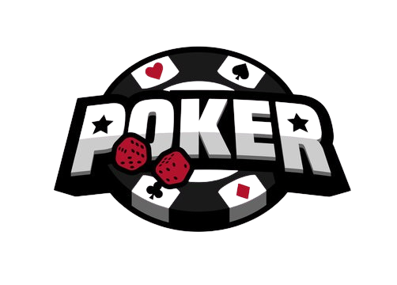
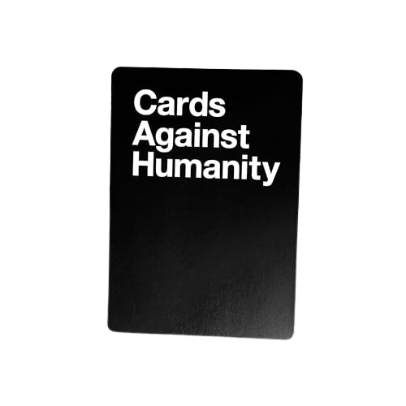
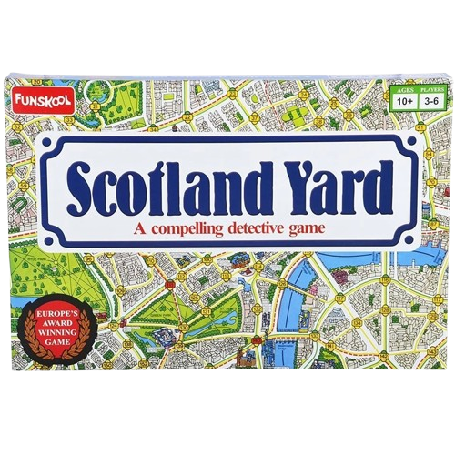
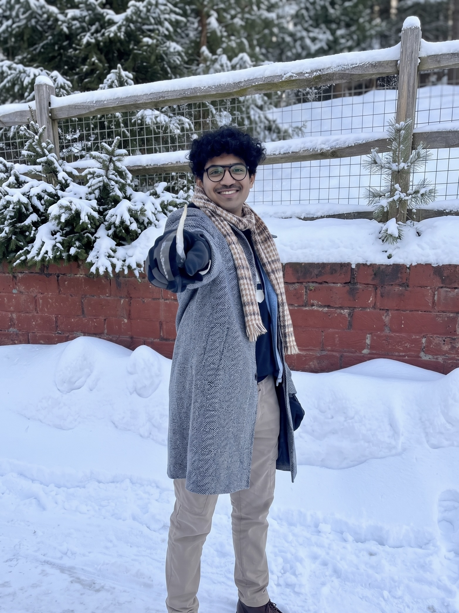
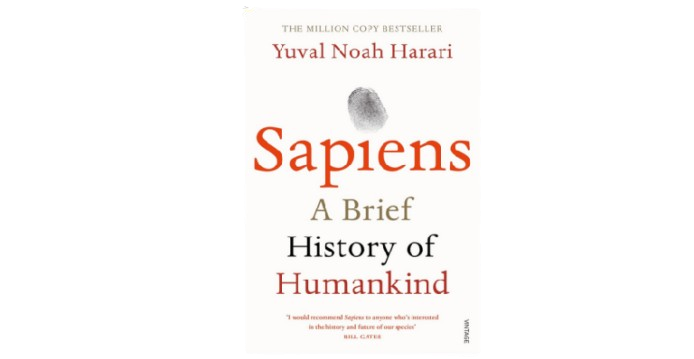
How's It Working With Me?
I had the chance to be both his teammate and flatmate, so I've seen his work ethic from pretty close - during office hours, late-night deployments, and even random discussions at home. One thing that always stood out was that he never hesitated to take ownership, even when it meant handling extra work or stepping into responsibilities outside his role.
Whether it was taking up additional projects, helping onboard new team members, or just making sure things didn't fall through the cracks, he was always someone the team could rely on without having to ask twice.
I've worked with Ankit across placement prep, club activities, and late-night assignment sessions at IIM Lucknow, and one thing that always stood out was how naturally he took ownership. He's someone who brings structure to discussions and helps turn ideas into execution.
What I really liked was his approach to problem solving - analytical, clear, and never overcomplicated. Whether it was interview prep, presentations, or team discussions, he always handled things with a calm and sorted mindset, even during hectic deadlines.
Couldn't catch me there? 😏
Reach out to me here ✦
Whether it's a new role, a collaboration, feedback on my case studies, or just a chat about product strategy - I'd love to connect.